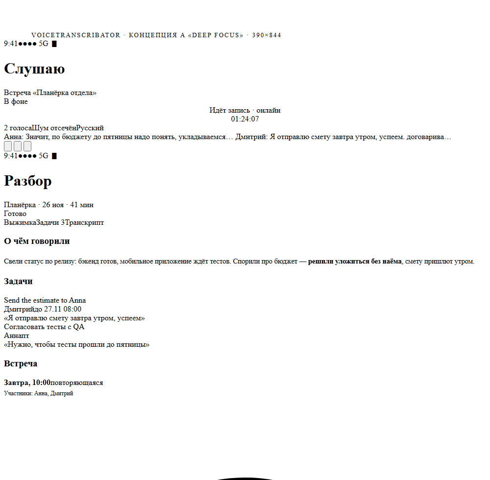
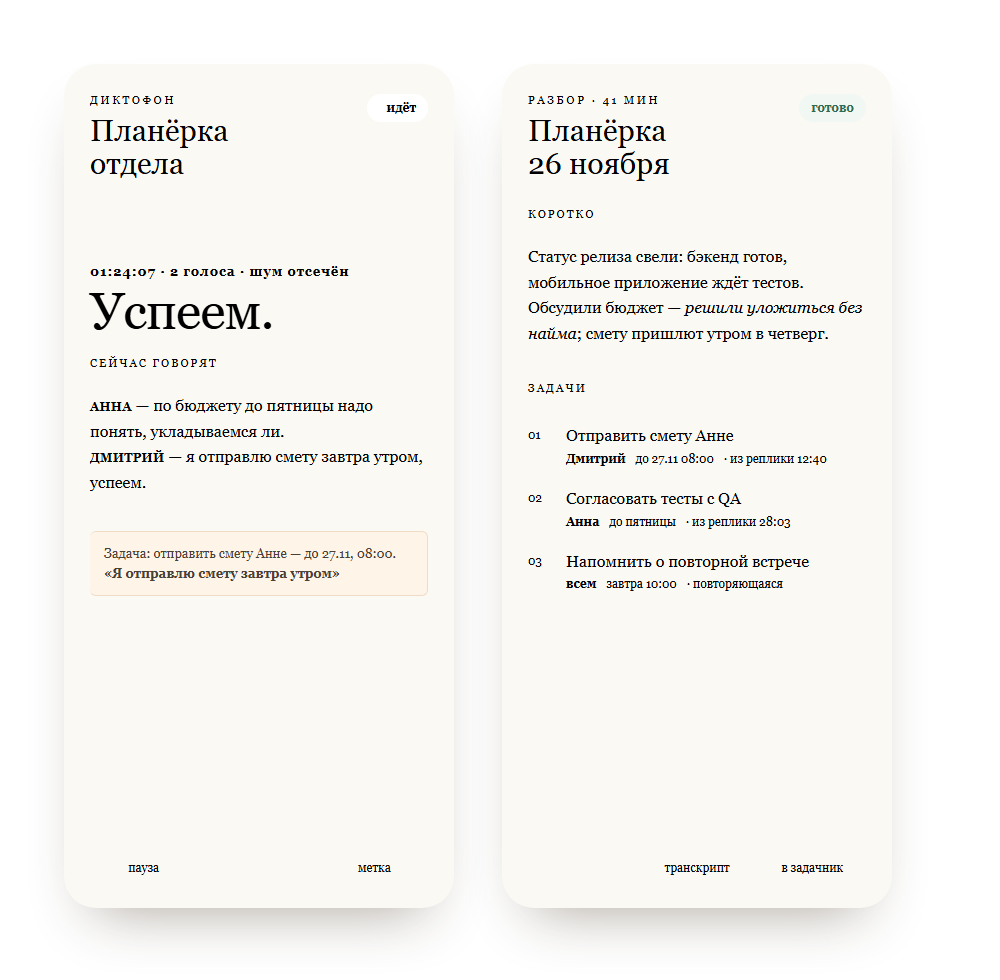
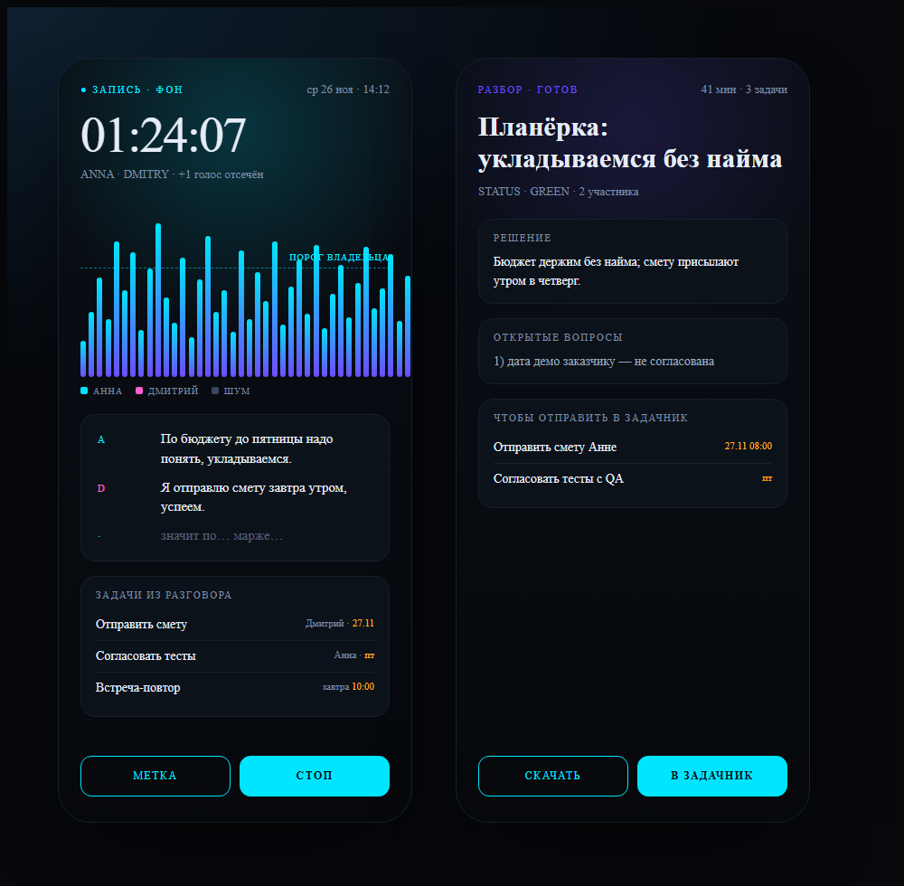

Один и тот же экран записи, три разных характера. Все макеты — размер телефона 390×844, то есть как выглядит на iPhone и большинстве Android. Выберите одну — по ней соберу остальные экраны.



Отдельно — четыре реальных состояния экрана записи: идёт запись, пауза, обрыв связи, пока тихо. Эти состояния уже работают в приложении.